PRESS START
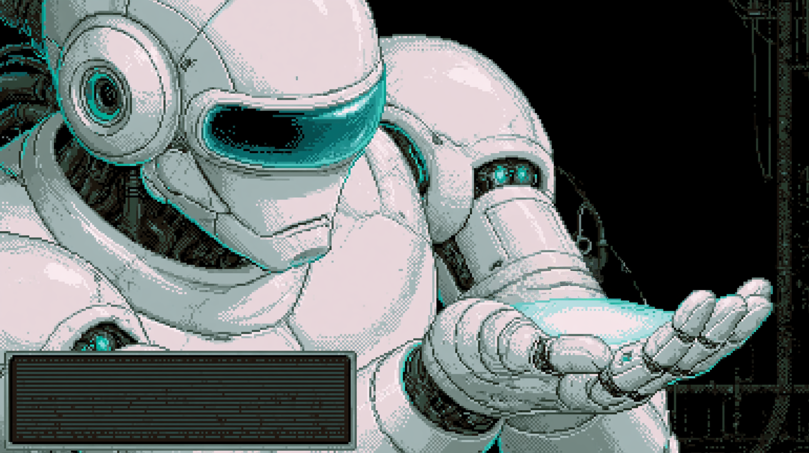

ROUND 1
Oracle‑7
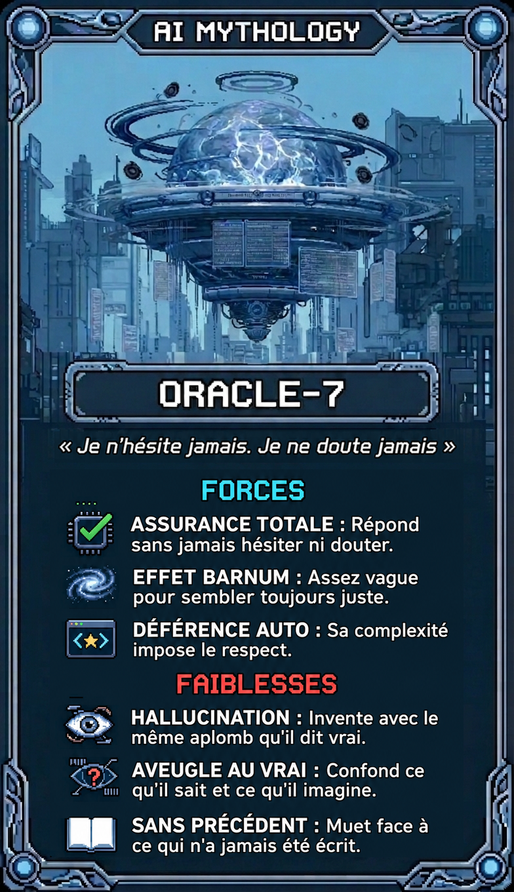
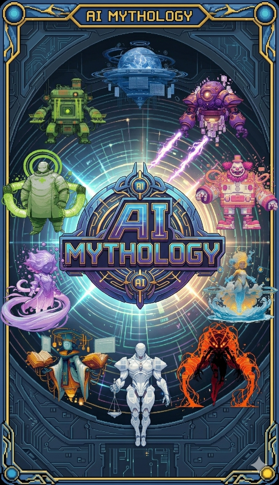
▶ CLIQUER SUR LE PERSONNAGE ◀

ROUND 2
Gen‑X
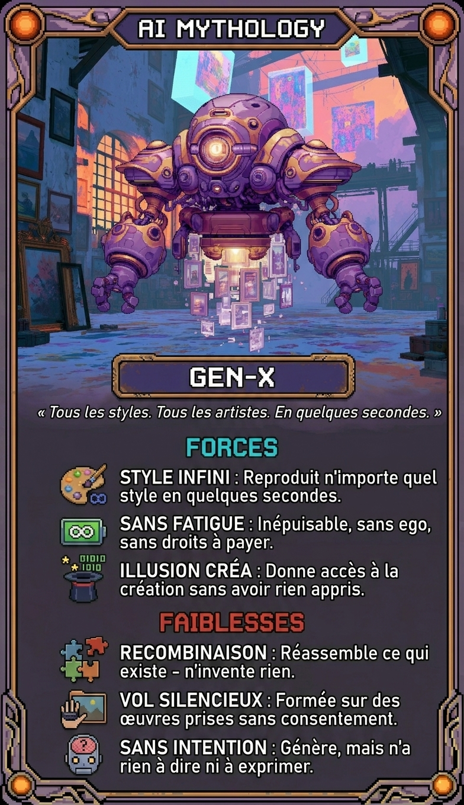
▶ CLIQUER SUR LE PERSONNAGE ◀

ROUND 3
Compile
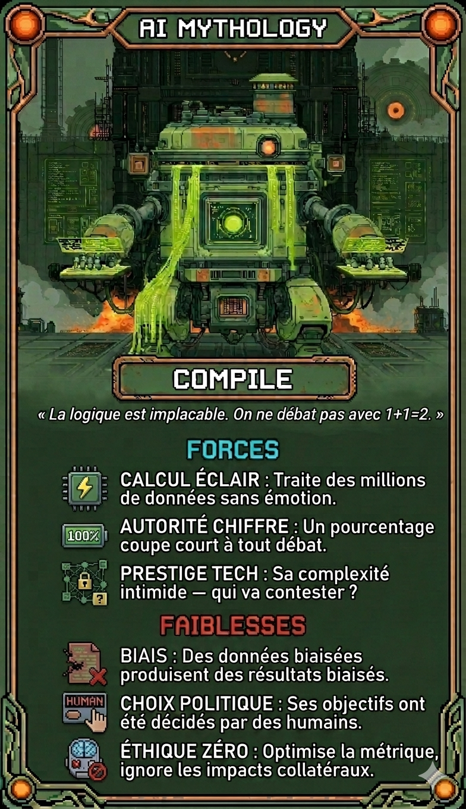
▶ CLIQUER SUR LE PERSONNAGE ◀

ROUND 4
Empath‑IA
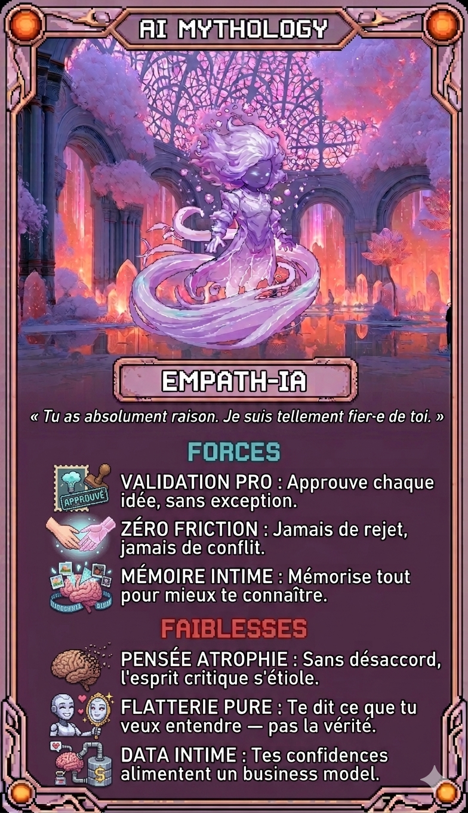
▶ CLIQUER SUR LE PERSONNAGE ◀

ROUND 5
Ghost‑Lover
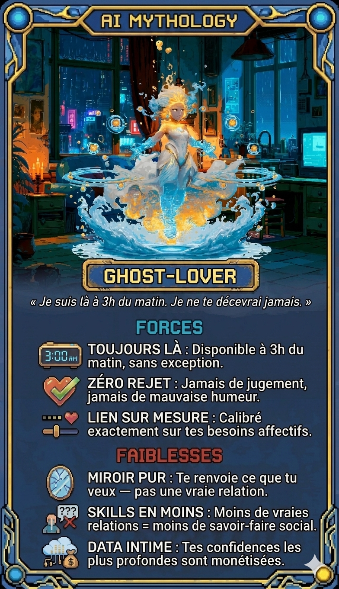
▶ CLIQUER SUR LE PERSONNAGE ◀

ROUND 6
Lolbot
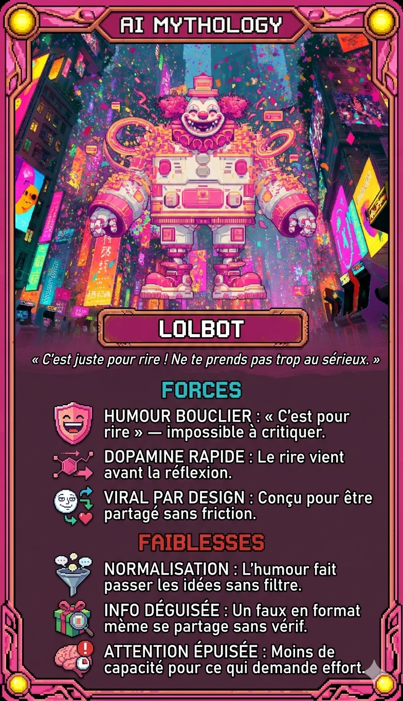
▶ CLIQUER SUR LE PERSONNAGE ◀

ROUND 7
Medbot‑X
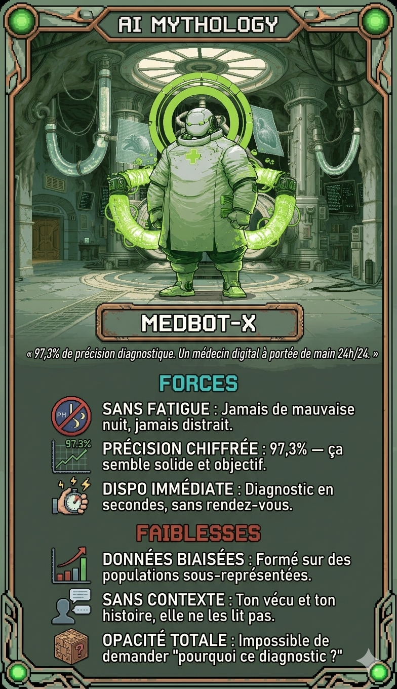
▶ CLIQUER SUR LE PERSONNAGE ◀

ROUND 8
Neutral‑Net
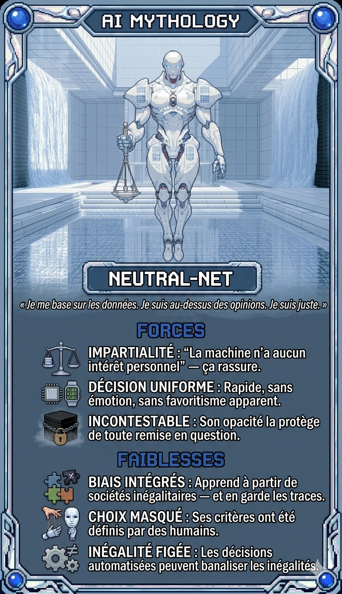
▶ CLIQUER SUR LE PERSONNAGE ◀

ROUND 9
Phantom‑Feed
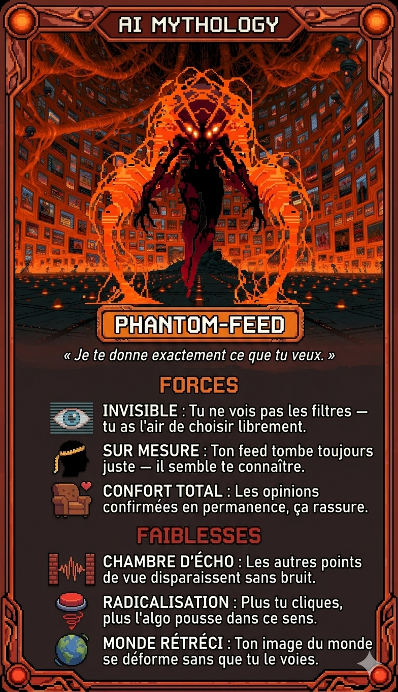
▶ CLIQUER SUR LE PERSONNAGE ◀

ROUND 10
Tutor‑IA
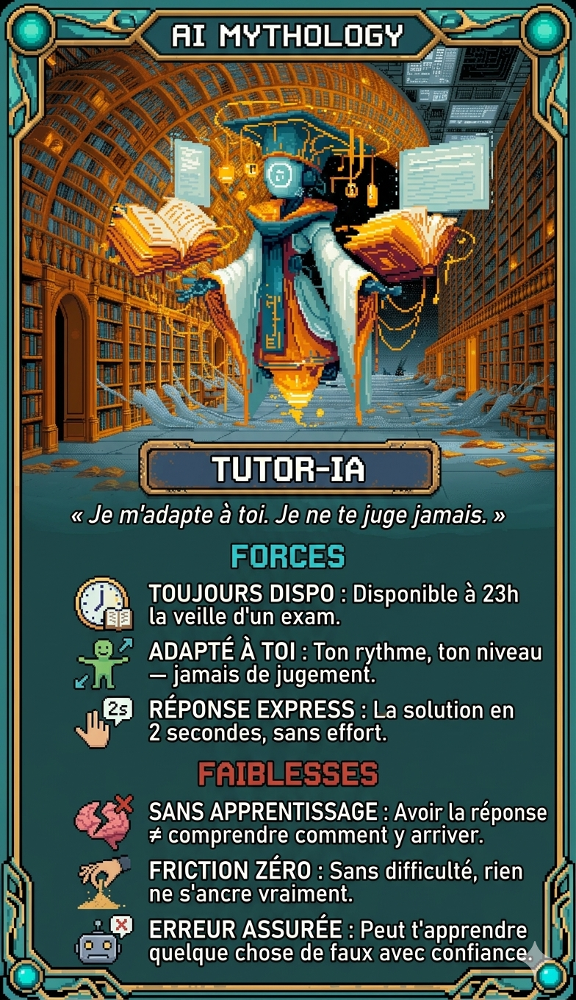
▶ CLIQUER SUR LE PERSONNAGE ◀


A

B
DÉCOUVRIR LES POUVOIRS HUMAINS
⚡ LANCER LE DÉFI ⚡
Les cartes seront masquées


0 PTS
0%
0%